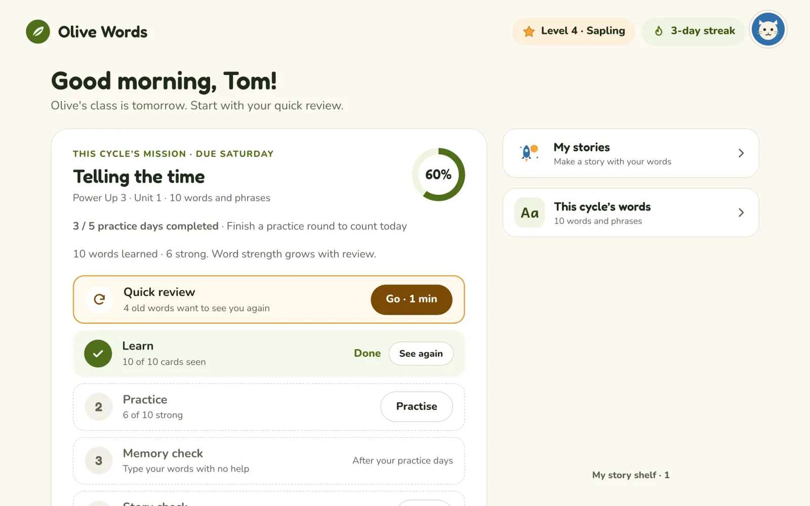
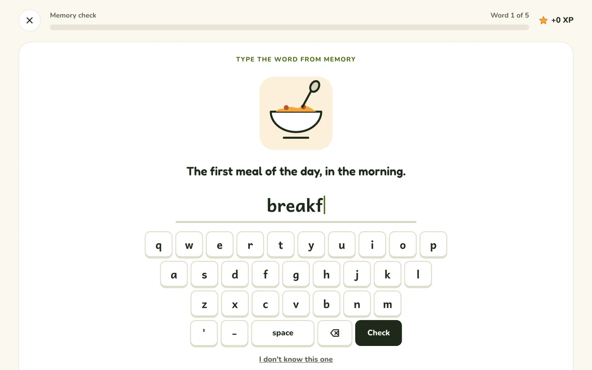
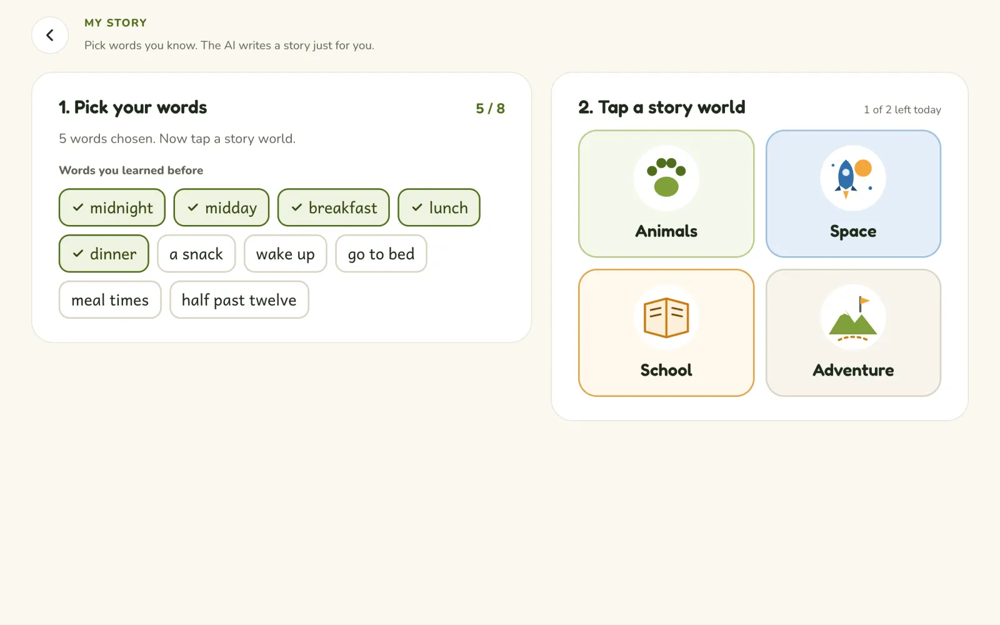
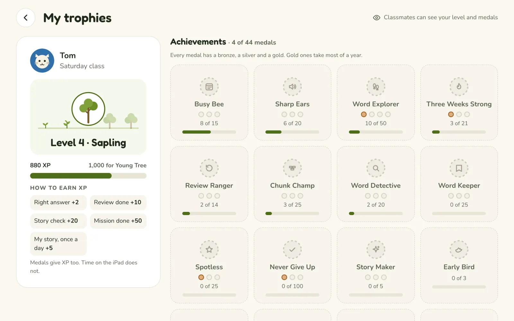
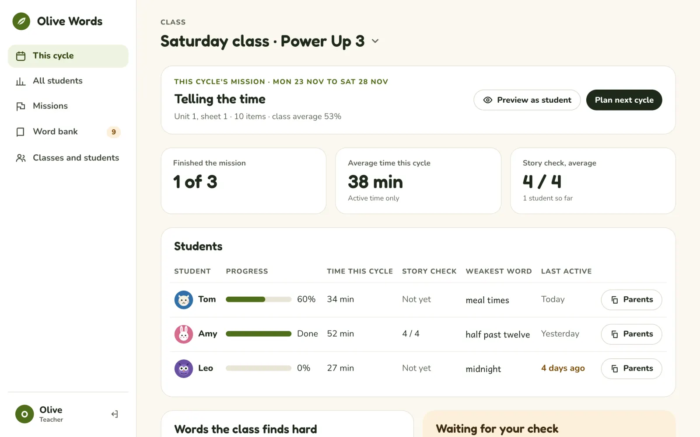
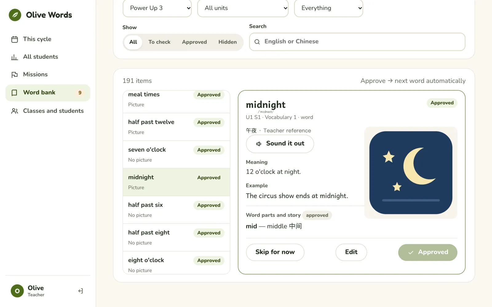

Olive WordsWord homework for Olive’s class
积木每周六上 Olive 老师的英语课，以前的单词作业是拍照片上传。我想让孩子们直接在 iPad 上背：Olive 在她那一端给全班布置每周的单词，孩子们看图、听发音、把单词拆成几块、凭记忆拼出来；谁卡在哪个词上，Olive 一眼就能看到。
Weekly vocabulary homework for my son’s English class. The teacher assigns the words; children learn them on their own iPads with pictures, sounds, word parts and spelling from memory.

- 用的人
- Olive 老师的英语班，孩子们和家长
- 设备
- iPad 优先，大字、大按钮，每屏一件事
- 每周
- 学、练、记忆检查、故事检查
- 做法
- Vue 3 + FastAPI + SQLite，字体和图标全部自己托管
长什么样What it looks like






截图里是演示数据，名字都是编的。 Screenshots use demo data with made-up names.
为什么做Why I made it
暑假我给积木做过一套背单词的小工具，用词根词缀把单词拆成一块块积木。开学后他再打开 Olive 布置的单词，跟我说：“今天 Olive 背的单词好简单。”
十月跟 Olive 聊天，我发现班上背单词这件事需要认真提上议程：作业是拍照上传的，老师很难知道谁真的记住了。我手里已经有两个背单词的产品，于是想给积木和他的同学们，也包括 Olive 其他班的孩子，做一个这样的东西。
Olive 可以在她那一端管理所有的同学，并直接给他们分配每周要背的单词。……之前是拍照片上传，我觉得不好……让大家直接在线上背。每个人用自己的 iPad 登录服务器就能直接看，Olive 也可以实时监督。
语音日记 · 2026.10.17
积木很喜欢游戏带来的那种正反馈，我就把它设计进了背单词里：等级、勋章、经验值，还有用自己学过的词写成的故事。对这个年纪的孩子，压力不能太大，但要让他们一直有往前走的劲儿。
当然，积木对这件事的评价也很诚实：“背这个单词可比看短视频恐怖多了。”
几条刻意的规则Rules on purpose
- 用规则代替设置。有位家长说孩子一周最多只有两天能练。我没有加一个“每周练几天”的设置，而是让系统自己判断：落后了，当天多练的几轮可以补上前面的天数，一天最多补三轮。家长和老师什么都不用调。
- 没有排行榜。我犹豫过要不要给孩子们排名，最后没有做。同学之间能看到等级和勋章，看不到分数和薄弱词；在 iPad 上待多久也不加经验值。
- AI 写的东西先给老师看。插图、释义、拆词都要老师批准。唯一的例外是孩子自己的故事：马上给孩子看，只有他自己和老师能看到。
- 名字检查宁可放过，不可错拦。故事里如果明确出现了班上同学的真名才拦下；拿不准的时候就让孩子看到。对孩子来说，错拦一个好故事比放过一个可疑的词更伤人。
- 尽量少收集孩子的信息。只存名字和一个小动物头像，家长同意之前孩子登不进来。